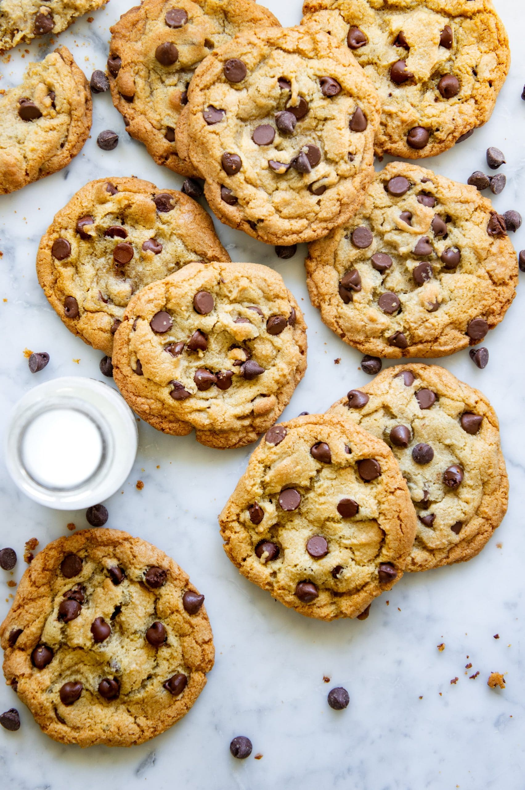

Chocolate Chip Cookies

Description
This recipe will give you the perfect, soft, and ooey-gooey cookies you remember as a child. What's even better is that you can make these cookies in only a short amount of time, and with ingredients you likely already have! Even if you don't have some of the ingredients, it shouldn't cost you much at all to get the things needed on this list. I think the best thing about this recipe is just how simple it is. Only three steps are needed to make perfect cookies!
Ingredients
- 2 ¼ cups all-purpose flour
- 1 teaspoon baking soda
- 1 teaspoon salt
- 1 (3.3 ounce) package instant white chocolate pudding mix
- 1 cup butter, softened
- 1 cup white sugar
- ¾ cup brown sugar
- 2 eggs
- 2 teaspoons vanilla extract
- 2 cups semisweet chocolate chips
Steps
- Preheat the oven to 375 degrees F (190 degrees C). Stir together the flour, baking soda, salt and instant pudding powder; set aside.
- In a medium bowl, cream together the butter, white sugar and brown sugar until smooth. Blend in the eggs and vanilla. Gradually mix in the dry ingredients until just blended. Stir in the chocolate chips by hand using a wooden spoon. Scoop cookies using an ice cream scoop or by heaping tablespoons. Place cookies at least 2 inches apart onto ungreased cookie sheets.
- Bake for 8 to 10 minutes in the preheated oven, until lightly golden. Cool on baking sheets for a few minutes before removing to wire racks to cool completely.